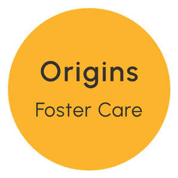

Trade Mark Journal No.2025/051 19 December 2025
UK00004304261 2 December 2025 (41,43,44,45)

- Class 41
- Education services; provision of school services; training services; training of non-medical staff in the care of children; training services relating to fostering; providing online non-downloadable electronic publications; information, consultancy and advisory services relating to all of the aforesaid services.
- Class 43
- Child care services; children’s residential home services; child care centres; day care centres; day care centre services for adults and children with medium to profound disability including those with life-limiting conditions; temporary accommodation for adults and children with medium to profound disability including those with life-limiting conditions; respite care services in the nature of children and adult day care for those with medium to profound disability including those with life-limiting conditions; provision of child care homes (residential); provision of care services for children; accommodation services; provision of meals and accommodation in family homes; information, consultancy and advisory services relating to all of the aforesaid services.
- Class 44
- Mental health services; therapy services; psychotherapy services; psychological counselling services; psychological therapy; psychiatry services; psychology services; counselling services relating to health and psycho-sociology; residential medical treatment services; residential medical advice services; learning disability screening services; provision of respite care (for offering families a rest from caring for the sick); therapeutic mental health and wellness services for foster parents and families by a caregiver; therapeutic mental health and wellness services for young people and children by a caregiver; information, consultancy and advisory services relating to all of the aforesaid services.
- Class 45
- Fostering of children; foster care; fostering placement services; fostering referral services; fostering of mothers and babies; personal and social work services rendered by others to meet the needs of individuals, namely fostering agency services, fostering and placing of children and young people; guardianship services; bereavement counselling; assessment services, carrying out checks and compiling reports on foster carers and family homes; contact mediation services between local authorities and foster carers and family homes; social networking services for fosterers and carers; information, consultancy and advisory services relating to all of the aforesaid services.
Origins Foster Care Limited
Representative: Tomkins & Co